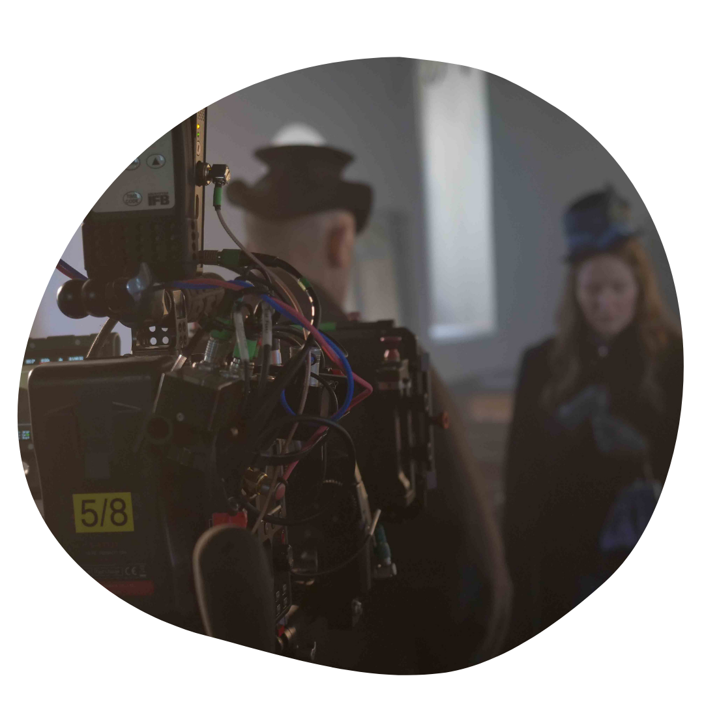
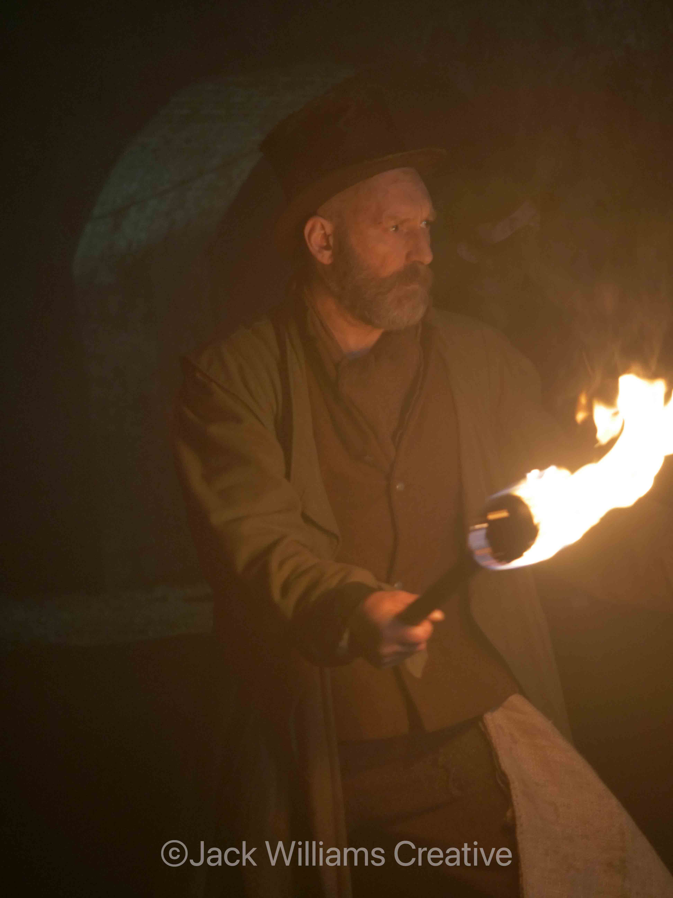
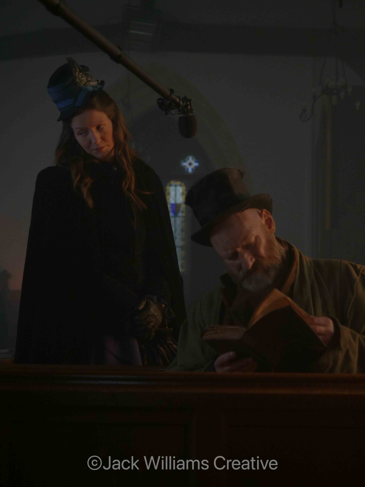
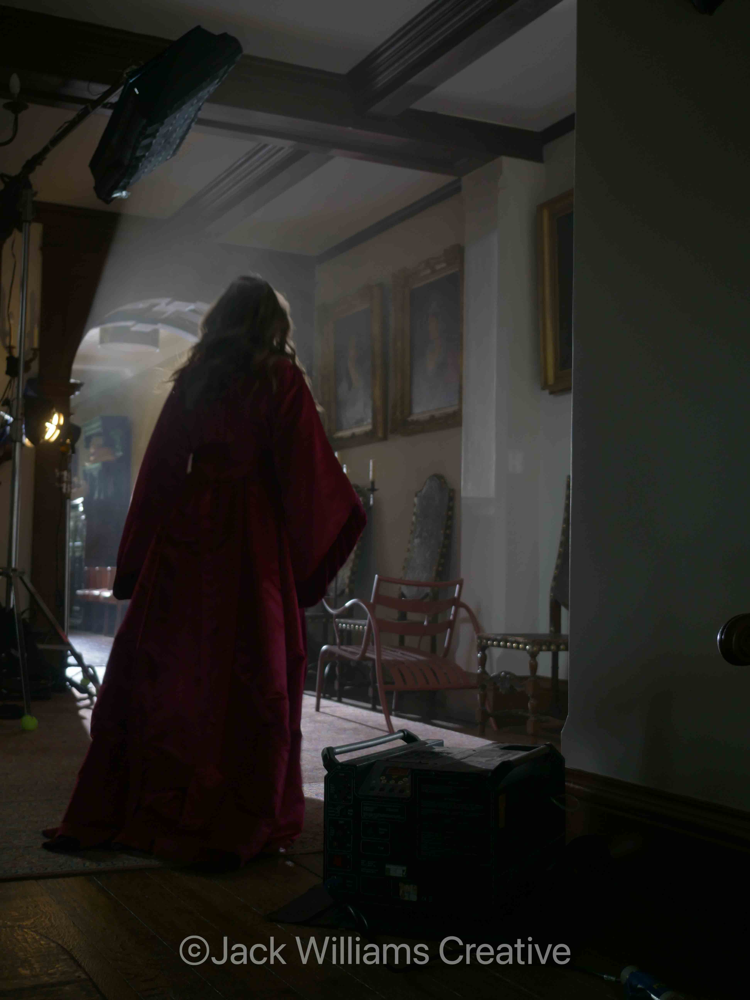
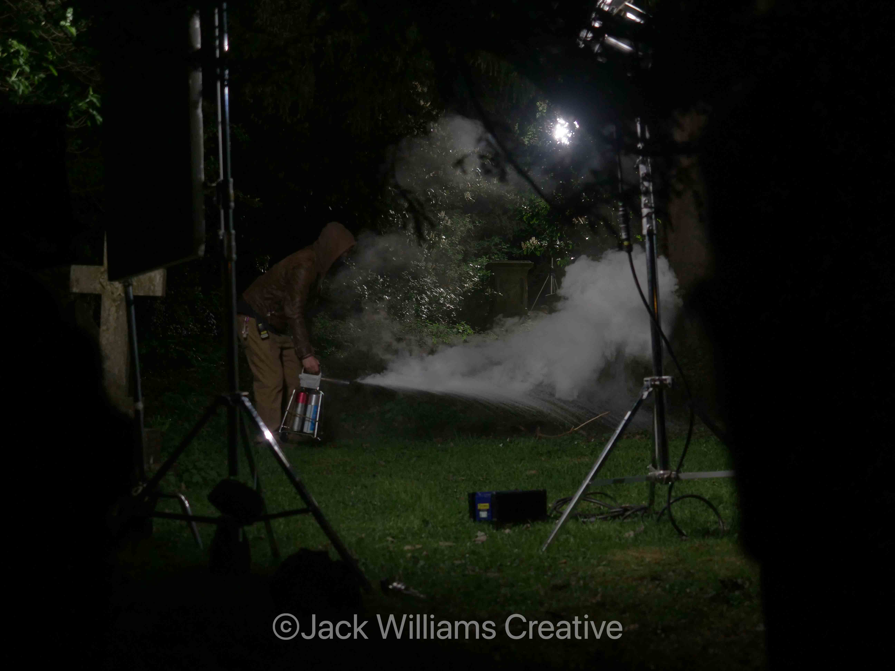
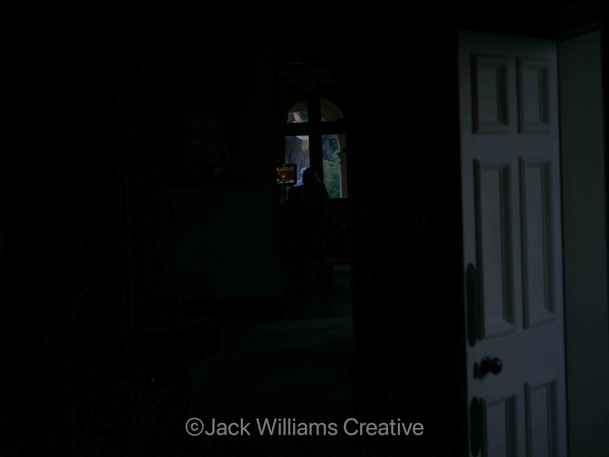
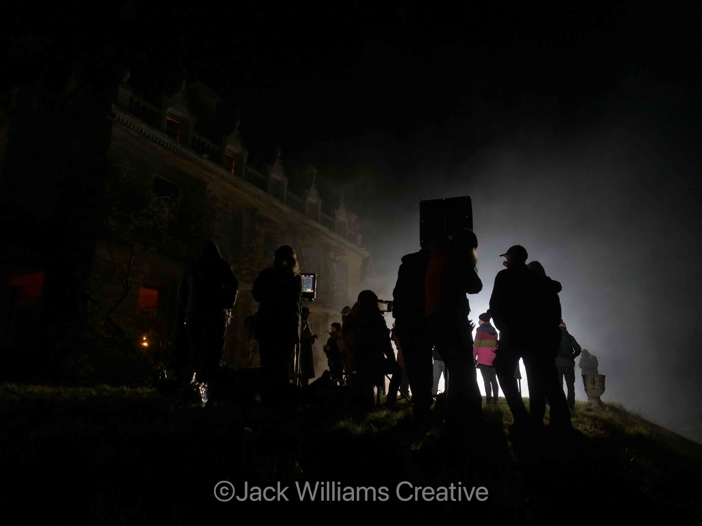
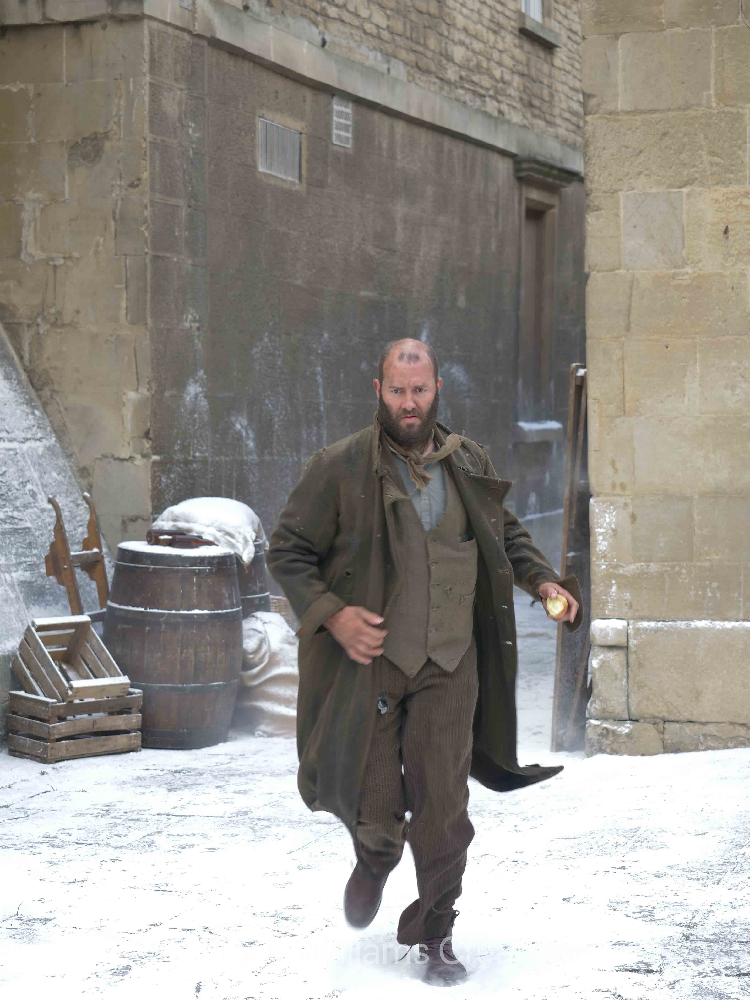
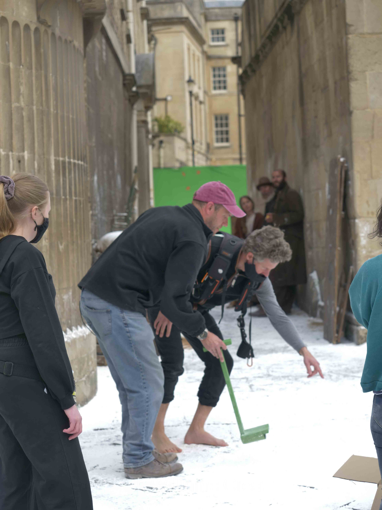

Fear the Invisible Man is a feature film to be released in 2022. My role was digital imaging technician. I had the responsibility to back-up each card and make a seamless filing structure. I also edited a few footage previews for the director, crew and investors. It was great fun being part of this production, fast paced, long days, but learnt a lot and made some great friends along the way!
IMDB page









